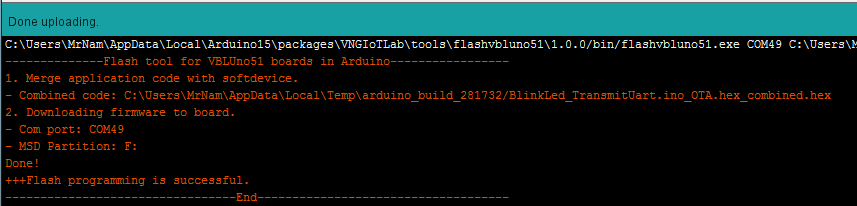

BẮT ĐẦU SỬ DỤNG MẠCH VBLUno51 VỚI ARDUINO IDE.
PHẦN 1: SƠ ĐỒ PINOUT

PHẦN 2: CÀI ĐẶT
Bước 1: Cài đặt Arduino IDE
-
Nếu đã cài đặt, bạn có thể bỏ qua bước này
-
Thực hiện: Tải bản cài đặt phù hợp tại ĐÂY và cài đặt vào máy.
-
Chú ý: Nếu bạn đang sử dụng hệ điều hành Linux, cần chạy Arduino IDE với quyền root. Điều này giúp Arduino IDE có thể mở cổng nối tiếp (UART) để nạp firmware cho mạch VBLUno (đối với VBLUno 1.0).
- Mở Terminal (Ctrl + Alt + T)
- Chuyển đến thư mục đã cài đặt Arduino bằng cách sử dụng lệnh “cd”. Ví dụ cd /home/mrABC/arduino-1.6.10
- Mở Arduino IDE với lệnh sudo: sudo ./arduino
Bước 2. Cài đặt trình điều khiển UART cho giao diện DAPLink (CMSIS-DAP) trên mạch VBLUno51
-
Phần này chỉ dành cho máy tính sử dụng hệ điều hành Windows.
-
Thực hiện: Tải trình điều khiển phù hợp tại ĐÂY và cài đặt vào máy tính của bạn.
Bước 3. Cài đặt gói dữ liệu giúp lập trình Arduino IDE trên mạch VBLUno51
Các bo mạch Arduino phổ biến sử dụng chip vi điều khiển AVR. Nếu thiết kế theo các mạch Arduino có sẵn, có thể dễ dàng sử dụng Arduino IDE để lập trình. Bo mạch VBLUno không sử dụng các thiết kế có sẵn từ arduino.cc nên cần cài đặt bổ sung các package hỗ trợ. VNG IoT Lab đã tham khảo và nghiên cứu phát triển package hỗ trợ Arduino IDE cho VBLUno và VBLUno51.
Cách 1: Cài đặt offline (khuyên dùng)
-
Bạn cần chắc chắn Arduino IDE không được mở trong quá trình cài đặt offline.
- Tải bản cài đặt phù hợp với hệ điều hành:
-
Giải nén và chạy file cài đặt
- Windows:
Setup_VBLUno_Windows.exe - Linux:
cd Setup_Offline_VBLUno_Linux_xxxchmod 777 Setup_VBLUno_Linuxsudo ./Setup_VBLUno_Linux. (Cần phải sử dụng lệnh sudo)
- Đường dẫn mặc định của thư mục cài đặt các packages cho Arduino:
- Windows: %APPDATA%\Arduino15. Ví dụ: “C:\Users\MrABC\AppData\Local\Arduino15”
- Linux: ~/.arduino15
- OS X: ~/Library/Arduino15
- Bạn chờ đến khi chương trình thông báo “The installation was successful” là quá trình cài đặt đã hoàn thành.
- Windows:
- Chú ý: Từ bây giờ, tại Preferences->Additional Boards Manager URLs luôn phải có nội dung sau (các packages khác nhau được phân tách bởi dấy phẩy):
https://raw.githubusercontent.com/VNGIoTLab/Arduino_VBLUno_nRF51822/master/package_vngiotlab_vbluno_index.json.
Cách 2: Cài đặt online
-
Chạy Arduino IDE, vào menu File, chọn “Preferences”, thêm dòng sau vào ô “Additional Boards Manager URLs”:
https://raw.githubusercontent.com/VNGIoTLab/Arduino_VBLUno_nRF51822/master/package_vngiotlab_vbluno_index.json*Chú ý: * Bạn có thể thêm nhiều địa chỉ URLs tại đây, phân tách chúng bởi dấy phẩy. -
Cài đặt dữ liệu “VNGIoTLab VBLUno Boards” thông qua Trình quản lý boards (Boards Manager)
- Từ menu: Tools -> Board -> Boards Manager …
- Chọn VNGIoTLab VBLUno Boards và nhấn Install
PHẦN 3: VÍ DỤ HELLO WORLD!
Khi học một ngôn ngữ lập trình mới, thông thường chương trình đầu tiên chúng ta thực hiện là Hello World example. Mục đích để giúp lập trình viên nắm được cấu trúc cơ bản của một chương trình, cách sử dụng IDE và trình biên dịch, và đặc biệt là tạo hứng thú cho lập trình viên theo kiểu “Đầu xuôi đuôi lọt”.
Với VBLUno51 cũng vậy, các bạn cũng nên bắt đầu bằng việc thực hiện một ví dụ Hello World, đó chính là ví dụ điều khiển nhấp nháy Led đơn.
Các bước thực hiện
-
Kết nối mạch VBLUno51 với máy tính thông qua cổng USB. Lúc này,
Led báo nguồn phải sáng -
Chọn board và cổng serial để nạp
-
Chọn VBLUno51_nRF51822_DAPLink(vx.x.x) từ menu của Arduino IDE:
Menu > Tools > Board > VBLUno51_nRF51822_DAPLink(v1.x.x) -
Chọn cổng nối tiếp tương ứng của VBLUno51:
Menu > Tools > Port > [tên cổng nối tiếp của VBLUno51]
-

- Ví dụ nháy led (Blink)
Bạn hãy copy và paste đoạn mã nguồn sau vào Arduino IDE
/*************************************************************************
VNGIoTLab - 2017
Arduino IDE with VBLUno51 board
Tutorial 1 - Hello World Example
Mô tả: Ví dụ nhấp nháy led trên mạch VBLUno51 với chu kỳ 2s
***************************************************************************/
// the setup function runs once when you press reset or power the board
void setup() {
// Khởi tạo chân LED là chân OUTPUT (trên VBLUno có sẵn 1 Led)
pinMode(LED, OUTPUT);
}
// the loop function runs over and over again forever
void loop() {
digitalWrite(LED, HIGH); // Bật sáng Led
delay(1000); // Chờ 1 giây
digitalWrite(LED, LOW); // Tắt led
delay(1000); // Chờ 1 giây
}
-
Sử dụng chức năng upload (Menu => Sketch =>
Upload) để biên dịch chương trình và nạp firmware xuống mạch VBLUno51.Điểm khác biệt của VBLUno51 so với phiên bản đầu tiên:NGƯỜI DÙNG KHÔNG CẦN CAN THIỆP VÀO PHẦN CỨNG, QUÁ TRÌNH NẠP DIỄN RA TỰ ĐỘNG -
Nếu biên dịch và nạp thành công, bạn sẽ nhận được thông báo như hình dưới đây

- Sau khi nạp code, chương trình sẽ tự động chạy. Hãy quan sát LED trên mạch VBLUno51 nhấp nháy với chu kỳ 2 giây.